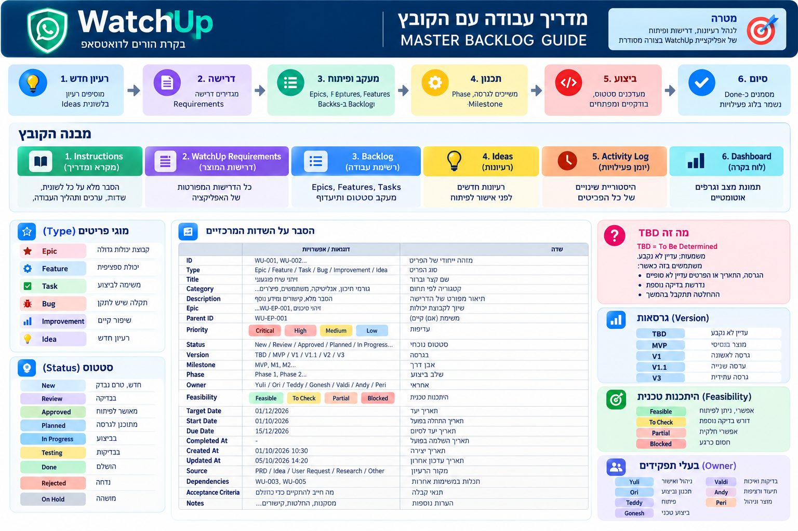

WATCHUP / PROJECT COMMANDמצב הפרויקט,
מצב הפרויקט,
במקום אחד
תמונה ברורה של התכנון, הביצוע והדברים שדורשים החלטה — מסונכרנת מול הגיליון התפעולי.
טוען את מצב הפרויקט…
CAPTURE / INBOX
יש רעיון חדש?
כותבים אותו במשפט אחד. המערכת תשמור אותו ב־Ideas עם מזהה אוטומטי; אחר כך מחליטים אם לקדם אותו.
מדריך קצרמפת עבודהלחץ כדי לראות את התהליך המלא — מרעיון ועד סגירה.
מפת תהליך
פתיחת המדריך המלאמפת עבודה
כך רעיון עובר משלב המחשבה ועד לביצוע מסודר — רק לאחר החלטה.

- 1רעיוןנשמר בלשונית Ideas
- 2אישורמחליטים אם נכון לקדם
- 3Backlogמגדירים משימה לביצוע
- 4ביצועסטטוס, הוכחה וסגירה
- 5Roadmapרק ליוזמה גדולה ומתוכננת
PLANNING TRACK
Roadmapמסלול תכנון
Vision → Roadmap → Releases → Milestones → Phases → Epics
- טוען שלבים…
מסמכי מקור ב־Git
- MISSION.mdמטרת הפרויקט והגבולות
- PRD.mdתכולת המוצר שאושרה
- REQUIREMENTS.mdדרישות ותנאי קבלה
- ROADMAP.mdשלבים, Releases ואבני דרך
- BACKLOG.mdסדר העדיפויות
- STATUS.mdמצב נוכחי והחלטות
EXECUTION TRACK
Backlogמסלול ביצוע
Backlog → בעלים → סטטוס → הוכחה → סגירה
טוען משימות…
FOCUS / NOW
מה צריך טיפול עכשיו
משימות בביצוע או חסומות מתוך ה־Backlog.
טוען מוקדים…